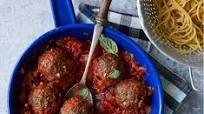

Impossible Meatballs

Description
Tastes just as good, if not better, than your typical ground beef meatballs.
Try Impossible meatballs for a nice break from the everyday.
Ingredients
- 12 oz. Impossible meat
- Salt
- Garlic powder
- Onion powder
- Basil
- Parsley
- Thyme
- Oregano
- Black pepper
Steps
- Preheat oven to 425°F.
- Mix together all ingredients in a bowl.
- Roll the mixture into balls about 1½ tablespoons each.
- Place on a non-stick baking sheet. Line with parchment paper if not non-stick. You can also use a cast iron pan!
- Bake for 10 minutes or until nice and browned.